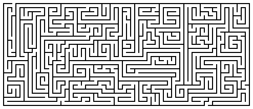
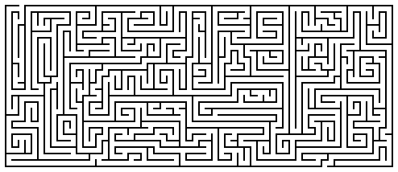
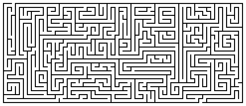

Read
the lessons at the Vanderbilt Library website:
http://divinity.lib.vanderbilt.edu/lectionary/AChristmas/aChristmas2.htm
Sermon Summary
|
What Scripture is the Sermon is based on? |
_______________________________ |
|
What is the main point of the Sermon? |
_______________________________ |
|
Write down any figures of speech used by the preacher (Metaphors, Similes, hyperbole) |
_______________________________ |
|
Write down any new, unusual or particularly interesting words the preacher uses |
_______________
|
Next week:Jeremiah 31:7-14 or Sirach 24:1-12, Psalm 147:12-20 or Wisdom of Solomon 10:15-21, Ephesians 1:3-14, John 1:(1-9), 10-18
Middle-School Pew-work ...Page 2
H T D E A T H N Y L N
E D D U S W I S E M S
|
(Matthew 2:13-23) Now after they had left, an angel of the Lord appeared to Joseph in a dream and said, "Get up, take the child and his mother, and flee to Egypt, and remain there until I tell you; for Herod is about to search for the child, to destroy him." {14} Then Joseph got up, took the child and his mother by night, and went to Egypt, {15} and remained there until the death of Herod. This was to fulfill what had been spoken by the Lord through the prophet, "Out of Egypt I have called my son." {16} When Herod saw that he had been tricked by the wise men, he was infuriated, and he sent and killed all the children in and around Bethlehem who were two years old or under, according to the time that he had learned from the wise men. {17} Then was fulfilled what had been spoken through the prophet Jeremiah: {18} "A voice was heard in Ramah, wailing and loud lamentation, Rachel weeping for her children; she refused to be consoled, because they are no more." {19} When Herod died, an angel of the Lord suddenly appeared in a dream to Joseph in Egypt and said, {20} "Get up, take the child and his mother, and go to the land of Israel, for those who were seeking the child's life are dead." {21} Then Joseph got up, took the child and his mother, and went to the land of Israel. {22} But when he heard that Archelaus was ruling over Judea in place of his father Herod, he was afraid to go there. And after being warned in a dream, he went away to the district of Galilee. {23} There he made his home in a town called Nazareth, so that what had been spoken through the prophets might be fulfilled, "He will be called a Nazorean." (NRSV) |
from www.geocities.com/lectionarypuzzles/ Free to distribute for free with this notice. Words are in a straight line in all directions. |
What were the risks Joseph had to balance in his decision to heed the message of the angel?
_________________________________________________________________________
_________________________________________________________________________
_________________________________________________________________________
What is the significance of the quote from the prophet Jeremiah?
_________________________________________________________________________
_________________________________________________________________________
_________________________________________________________________________
What is the significance of Joseph choosing Nazareth for their new home?
_________________________________________________________________________
_________________________________________________________________________
_________________________________________________________________________
